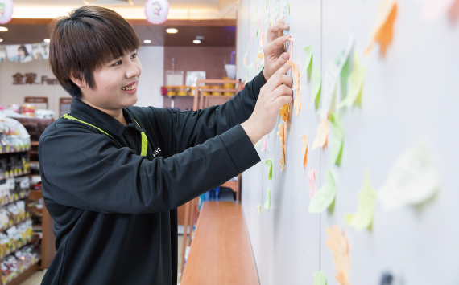

放不下的“破店”
在别人眼中，葛洲坝门店是个“破店”，不但窝在商务楼里，而且租金高得惊人，不熟悉的人怎会知道在这片层层幢幢的商务楼里藏着一个全家。2010年，当翠平还是1字打头的年龄便加入了全家,后来有机会往公司内部晋升，“可是那时年轻气盛，又很情绪化，自己都没办法控制自己，怎能领导别人呢？”翠平说以自己风里火里的性格不适合在公司发展，这才选择了加盟。
“加盟第一年，还没有收心，反正是一人吃好全家吃饱，挣多少就花多少，也没很大的责任心，可能是之前在直营店里做了几年教育训练店长，好日子过惯了。”加盟后的第二年，因为结婚生子，翠平瞬间像换了个人似的，她意识到背后有个家庭需要担起责任，于是就拉了她先生胡东延也加入全家，后来复数第二家店后请他负责看管另一家门店。不管外人怎样看待，翠平始终对门店怀有深厚的感情，“平均每天来客数1300左右，基本是在商务楼上班的顾客。日积月累下来，他们已经养成了习惯，一日两餐再加下午茶，都会来全家。所以很多人已经像 朋友那般熟悉了。”
当我质疑脸庞还略显稚嫩的翠平以她火爆的个性，如何在服务行业立足？她笑着说道：“我的脾气这几年已经改好了很多，可能是因为有了孩子，再加上感觉自己赶不上父母年迈的速度，变得成熟了许多。做这个行业，如果不是这么没心没肺的，很难做下去。有时碰到顾客骂员工，可以骂上十几分钟，她们又不能回嘴，只能躲到后场来哭。”这个时候，翠平会买杯奶茶来安慰员工，和员工们讲，客人骂你们，你们就到后场来骂她，发泄出来就好。

提得起的幸福
1992年出生的翠平鬼点子特别多，葛洲坝门店 有一整块留言墙，各种颜色的小贴纸几乎铺陈满满一墙，有顾客的随笔、留言、涂鸦，最可爱的是与翠平或店员之间的互动。她和员工之间也相处得融洽，“我妈妈来过店里，叫我的小名大盼，员工们听到后也跟着喊大盼，喊我妈妈也叫妈妈，喊我儿子也叫儿子。大家开心就好。”
日商一天天在提高，而租金涨得更厉害，虽然挣得没有别人多，但是翠平很知足，靠自己的劳动还是有得赚。上几个月一天咖啡只能卖60多杯，经过大家的努力，3月份就翻了一倍，所以说肯努力就能见到效果，用翠平的话说就是凡事都不是什么大事，都不难。

“爸爸妈妈辛苦了一辈子，我想挣更多的钱孝顺他们，带他们出去旅游，也让孩子能上更好的学校。以前我很情绪化、很感性，常常会因为别人的一句话、神秘顾客的点评而难过半天，死盯着不放，钻牛角尖。现在就不同了，我会想办法解决，下次一定不再犯错。过去的就让它过去了，我要对家人、对员工负责。”做了妈妈后的翠平成熟了许多。
对翠平来说，除了工作，所有时间都扑在孩子身上了，去哪里都要带着，和员工们的团队建设也变成了家庭聚会。她希望等全家加盟店数封顶后，有朝一日可以加盟德克士，“想归想，不过眼前先做好目前的三家店。自己努力多少就会得到怎样的成绩，这是成正比的。”